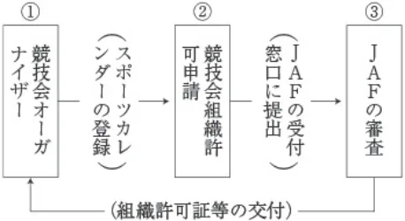

公認競技会開催の手続きについて
P.1公認競技会開催の手続きについて
ＪＡＦの公認競技会を主催しようとするクラブ、団体は、前もってＪＡＦの組織許可を受けなくてはならない。この競
技の組織許可の申請手続きについては、「自動車競技の組織に関する規定」、また、この規定と合わせて、ラリー競技については「ラリー競技開催規定」、スピード競技については「スピード競技開催規定」に定められた規則に従って行うことになっているが、その申請手続きの要点を下記にまとめて示したので、上記規定と合わせて参照のこと。なお、スピード競技のクローズド格式の競技会は「届出競技」のため、ＪＡＦスポーツカレンダー登録ならびに組織許可申請を必要としない。

ＪＡＦの公認競技会を主催するにはあらかじめＪＡＦに登録されているクラブ、団体に限られる。登録クラブ、団体は、
表１に示したその登録種別に応じた格式の競技会を開催する資格がある。
〔ラリーについては、「ラリー競技開催規定・細則：ラリー競技会の組織許可に関する細則」を参照のこと。〕
表１
| 登録クラブ団体の種別 | 開催できる競技会の格式 |
|---|---|
| 準 加 盟 ク ラ ブ | クローズド |
| 加 盟 団 体 | 準国内、地方 |
| 加 盟 ク ラ ブ | 準国内、地方、クローズド、国内（レースを除く） |
| 公 認 団 体 | すべての格式の競技会（クローズド競技を除く） |
| 公 認 ク ラ ブ | すべての格式の競技会 |
① → ②
競技会のオーガナイザーである当該登録クラブ、団体は競技会の組織許可申請をＪＡＦに提出する前に、あらかじめそ
の競技会がＪＡＦスポーツカレンダーに登録してあることが必要である。（国内スポーツカレンダー登録規定参照）
② → ③
組織許可申請は表２の通り組織許可申請書（ＪＡＦ所定の用紙）と競技会特別規則書の草案と組織許可申請料を添えて
ＪＡＦの窓口に提出すること。
P.2公認競技会開催の手続きについて
表 2競技会を主催する場合の提出書類一覧表
（各提出書類を１部づつ提出のこと）
| 競技の格式 | 提 出 書 類 | 提 出 期 限 |
|---|---|---|
| （1）準国内競技 地方競技 クローズド （注1） | 組織許可申請書 | 開催日の1ヵ月前 |
| 特別規則書（草案） | 開催日の1ヵ月前 | |
| コース許可証、コース図、査察報告書の写し（スピード競技 のみ） | 開催日の1ヵ月前 | |
| 特別規則書 | 参加受け付け開始の2日前 | |
| （2）国内競技 | 組織許可申請書 | 開催日の2ヵ月前 |
| 特別規則書（草案） | 開催日の2ヵ月前 | |
| 特別規則書 | 参加受け付け開始の2日前 | |
| （3）国際競技 | 組織許可申請書 | 開催日の4ヵ月前 |
| 特別規則書（草案） | 開催日の4ヵ月前 | |
| 特別規則書 | 参加受け付け開始の2日前 | |
| 前記各項に該当 | 公式プログラム（または参加者名簿）、役員名簿、公式通知、 ロードブック（またはルートカード）、成績表 | 競技会終了後14日以内 |
| スピード競技のクローズド | 開催届け | 開催日の14日前 |
注1）スピード競技のクローズド格式競技会を除く
注）その他
１．全日本および地方選手権については、日本選手権規定を参照のこと
２．〈道路を使用する競技〉◎権威ある機関で測定した地図に基づくコース測定値
〈テストを含む競技〉◎テスト種目の詳細書
〈公道を使用する競技〉◎道路使用に関する警察当局の許可書の写し
〈リブレ車両の競技を含む場合〉◎リブレ車両規則の草案を１部、所定の組織許可申請提出期限のさらに２ヵ
月前に提出のこと。
表３日本選手権競技会の組織許可申請提出期限
レース：
| （1）全日本選手権（国際競技） （2） 〃 （国内競技） （3）地方選手権 | 開催日の4ヵ月前 開催日の3ヵ月前 開催日の2ヵ月前 |
ラリー：
| （1）全日本選手権 （2）地方選手権 | 開催日の3ヵ月前 開催日の2ヵ月前 |
スピード競技：
| （1）全日本選手権 （2）地方選手権 | 開催日の3ヵ月前 開催日の2ヵ月前 |